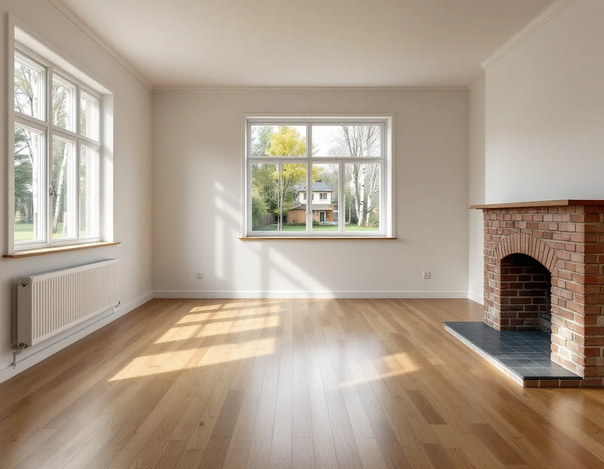
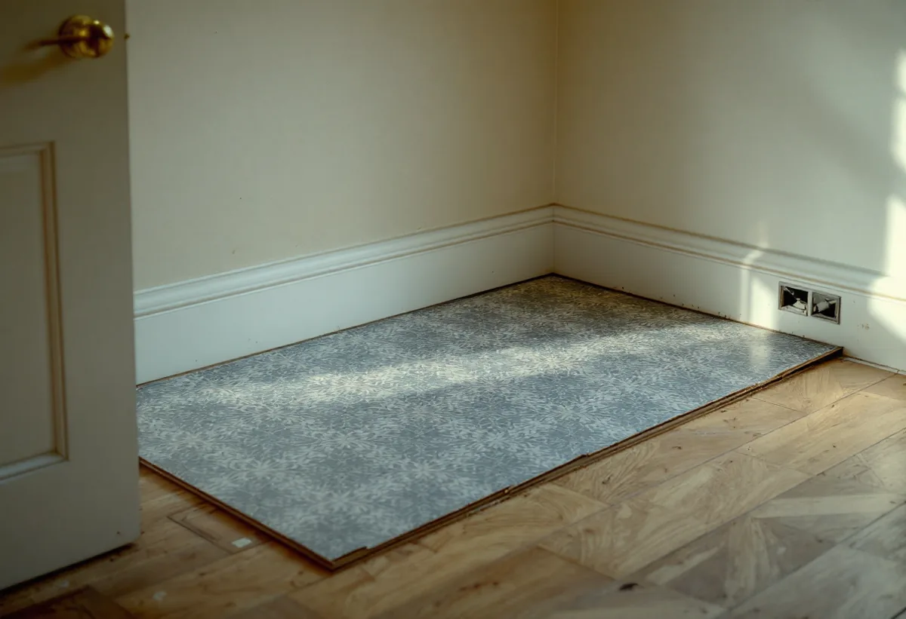

Platsbesök
Vi tittar på golvets lager, mäter höjder och ser hur bjälklaget känns när man går på det.
På Mälaröarna finns allt från stenhuggarbyns arbetarlängor till modernistiska villagator och sommarhus som i dag är helårsbostäder. Golven i husen är lika olika som husen själva. Geal Entreprenad AB lägger nya golv och slipar gamla i hela Ekerö kommun, med gratis platsbesök och skriftligt kostnadsförslag.

Ekerö kommuns kulturmiljöprogram berättar att Stenhamra på Färingsös sydvästra sida etablerades 1884, när stenbrottet grundades. Intill brottet byggdes Stenhuggarbyn med arbetarbostäder och skola, och några av arbetarlängorna flyttades dit 1889 från Stockholms stads gamla stenbrott i Huvudsta. Brottet lades ned 1937.
Under det tidiga 1900-talet började arbetarna bygga egna hem utanför byn, och de villorna finns kvar men har byggts om under åren. I dag domineras Stenhamra av villor från andra halvan av 1900-talet, framför allt enfamiljshus från 1960- och 70-talen. Programmet pekar ut Ramundvägen som ett ovanligt välgestaltat modernistiskt villaområde med mycket höga arkitektoniska värden.

Ett enfamiljshus från de här decennierna har ofta fått nya golv i omgångar. Under en laminatskiva från 1990-talet kan det ligga en plastmatta, och under den ett äldre parkett- eller brädgolv. Varje lager gör golvet högre och kan dölja skador i underlaget. Vi tar därför upp en bit i ett hörn eller vid en tröskel och ser vad som finns innan vi föreslår att riva, slipa eller bygga på.
I ett modernistiskt hus är golvet ofta en stor del av rummets karaktär, med öppna planlösningar där samma golv löper genom flera rum. Där vill man undvika trösklar och skarvar mitt i ytan. Vi planerar läggningsriktning och övergångar så att golvet blir sammanhängande, och visar prover i husets eget ljus innan du bestämmer dig.
Boverket skriver att marken under och runt huset är den vanligaste källan till radon, men att byggmaterialet också kan bidra. Alunskifferbaserad lättbetong, så kallad blåbetong, användes från 1929 till slutet av 1970-talet. I både väggar och bjälklag kan den ge höga halter när luftväxlingen är dålig.
Boverket rekommenderar att du mäter radon när du bygger om eller till huset. I villor och radhus ska mätningen göras under eldningssäsongen, oktober till och med april, och pågå i minst två, helst tre månader. Ska vi ta upp ett golv mot marken eller öppna ett bjälklag i ett hus från perioden är det bra att ha ett aktuellt mätvärde, och att planera en ny mätning när arbetet är klart.
Kulturmiljöprogrammet konstaterar att permanentning av fritidshus sker i snabb takt i kommunen. På östra Ekerö har områden med sommarbostäder, till exempel Älvnäs, Gällstaö och Erikssten, permanentats och förtätats de senaste decennierna, och där har sommarvillor och sportstugor från 1900-talet byggts om eller rivits. På Adelsö uppfördes förhållandevis stora fritidshusområden under andra halvan av 1900-talet, dolda i skogsterräng på öns södra sida och intill färjeläget.
Ett golv i ett hus som var byggt för sommaren har sällan legat på ett underlag som är tänkt för vinterns kyla. När huset blir permanentbostad märks det i form av kalla golv, glipor och sviktande partier. Golvbytet är ett bra tillfälle att se över bjälklaget innan det nya golvet läggs ovanpå.
Ombyggda sommarhus har ofta en äldre del och en nyare, och de ligger sällan på exakt samma höjd. Vill du ha ett sammanhängande golv genom båda delarna behöver underlaget i den lägre delen byggas upp, eller en tröskel placeras där den gör minst skada. Vi mäter höjderna i hela huset och visar vad respektive lösning innebär innan något beställs. En tröskel kan också vara ett medvetet sätt att visa var det gamla huset slutar och det nya börjar.
Badrum och tvättstuga hör till ett eget arbetsmoment med tätskikt, och kök kräver ofta att golvet planeras före skåpen. Ska fler rum göras om samtidigt är det klokt att lägga golvet i en ordning som gör att inget behöver rivas upp igen. Mer om material och underlag finns på sidan om golvläggning.
Vi tittar på golvets lager, mäter höjder och ser hur bjälklaget känns när man går på det.
Du får ett skriftligt kostnadsförslag där rivning, underlag och nytt golv står var för sig.
Vi bestämmer ordningen mellan rummen och om radonmätning eller fuktmätning behövs innan.
Gamla lager tas bort, underlaget riktas och nivåskillnader byggs upp.
Golvet läggs med trösklar och lister anpassade efter dörrarna, eller slipas och behandlas.
Vi går igenom resultatet och lämnar råd om skötsel.
Att byta eller slipa golv ger rotavdrag på arbetskostnaden, både i villa, radhus och fritidshus som du äger och använder. Avdraget är 30 procent av arbetskostnaden, högst 50 000 kr per person och år och högst 75 000 kr tillsammans med rutavdrag.
Material och resor räknas inte in. Vi drar avdraget direkt på fakturan.
Antalet gamla lager som ska bort, hur mycket underlaget behöver byggas upp och om bjälklaget behöver åtgärdas påverkar mest. Läget spelar också in, till exempel om material ska fraktas till en ö med färja. Platsbesöket är gratis och du får ett skriftligt kostnadsförslag.
Parkett, trägolv, klinker och slipning.
Golvläggning i Stockholm →Takbyte, takbesiktning och plåtarbeten.
Takläggare på Ekerö →Stenhamra, Kungshatt och Adelsö.
Takrenovering på Ekerö →Utanför plan, strandskydd och eget avlopp.
Attefallshus på Ekerö →Anmälan, mjukt vatten och eget avlopp.
Badrumsrenovering på Ekerö →Nytt hus, vattenskydd och bergvärme.
Byggföretag på Ekerö →Väder, säsong och torktider på öarna.
Fasadmålning på Ekerö →Egnahem, villaområden och äldre gårdar på Ekerö.
Fasadrenovering på Ekerö →Sommarvillor och 60-talsvillor på Ekerö.
Fönsterbyte på Ekerö →Slipa trägolv som ligger på golvvärme.
Golvslipning på Ekerö →Vedspis, egen brunn och nya sopsorteringen.
Köksrenovering på Ekerö →Sommarvillor, stugor och villor på Mälaröarna.
Målare på Ekerö →Takvatten, solceller och plåttak på Ekerö.
Plåtslagare på Ekerö →Altan, gäststuga och snickeri nära Mälaren.
Snickare på Ekerö →Kartan, solcellerna och skorstenen.
Takbyte på Ekerö →Tapet på timmer, papp och skivor.
Tapetsering på Ekerö →Kartan, inglasningen och registret.
Tillbyggnad på Ekerö →Braskamin och större fönster.
Totalrenovering på Ekerö →